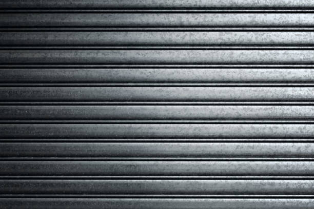

Diagnostic avant geste
Dans le secteur Canal Saint-Martin, le serrurier sépare porte claquée, verrouillage réel, cylindre bloqué et fermeture multipoints avant de choisir la méthode.
Dans Paris 10e, porte claquée non verrouillée : à partir de 75€
Ouverture de porte fermée à clé Paris 10e: serrure verrouillée, clé perdue, cylindre bloqué ou porte blindée. Devis annoncé avant intervention dans le 75010.

Dans le secteur Canal Saint-Martin, le serrurier sépare porte claquée, verrouillage réel, cylindre bloqué et fermeture multipoints avant de choisir la méthode.
Pour Paris 10e, le tarif est annoncé avant la partie technique afin de savoir ce qui relève de l’ouverture simple ou d’un dépannage plus engagé.
La méthode tient compte de les cages d’escalier fréquentées près des gares: l’objectif reste de préserver la porte, le bâti et la serrure chaque fois que le mécanisme le permet.
Après ouverture à Canal Saint-Martin, poignée, tour de clé, rappel du pêne et verrouillage depuis le palier sont contrôlés devant vous.
Dans Paris 10e, une porte fermée à clé impose un diagnostic différent d’une simple porte claquée. Le cylindre a été actionné, le pêne dormant est engagé et la porte peut retenir un ou plusieurs points de fermeture. Dans un environnement comme Canal Saint-Martin, marqué par appartements, commerces, cages d’escalier fréquentées et accès de gare, la bonne intervention commence par identifier le mécanisme avant de toucher à la serrure.
Le serrurier vérifie la cause réelle: clé perdue, cylindre qui tourne mal, clé cassée, porte blindée, serrure multipoints ou gâche sous tension. Une serrure fermée par plusieurs personnes différentes peut être verrouillée sans que l’occupant sache combien de tours ont été donnés. Le devis est donc annoncé avant travaux, avec une explication claire de la méthode et de ce qui peut être conservé.
Près du canal, de république ou des gares, l’urgence porte fermée à clé arrive souvent dans un contexte pressé. Cette réalité locale ne remplace pas le métier: elle aide surtout à préparer l’accès, l’outillage et le temps nécessaire pour travailler proprement sur une porte verrouillée.
Une ouverture de porte fermée à clé dans le 75010 ne justifie pas automatiquement une serrure neuve. Si le cylindre se récupère et si la fermeture reste fiable, l’intervention peut s’arrêter au contrôle. Après perte ou vol de clés vers Canal Saint-Martin, la sécurité est en revanche réévaluée avec vous.
Le premier point consiste à comprendre le verrouillage: un tour de clé simple, deux tours, un barillet bloqué, une serrure qui accroche ou une porte qui force dans son cadre. Dans le secteur Canal Saint-Martin, dire si la clé est perdue dans les transports ou oubliée ailleurs oriente aussi la sécurisation après ouverture.
À Canal Saint-Martin, une serrure fermée à clé peut bloquer par usure du cylindre, clé déformée, pêne sous pression ou gâche décalée. Le diagnostic évite une méthode trop lourde, surtout avec les cages d’escalier fréquentées près des gares.
Le second point concerne la préservation de la porte. Percer, extraire ou remplacer n’a de sens que si la situation le justifie. Le but est d’ouvrir, de contrôler, puis de vous laisser une fermeture utilisable et cohérente avec le niveau de sécurité attendu dans le 75010.
Dans Paris 10e, le remplacement complet reste réservé aux serrures forcées, cassées ou dépassées. Si un cylindre adapté suffit, la solution est plus claire, plus rapide et plus cohérente pour le logement.
Dans le 75010, une porte fermée à clé peut cacher des réalités différentes: perte de clés, barillet bloqué, porte blindée ou fermeture multipoints. Le geste dépend de cette cause, pas du seul intitulé de l’urgence.
Si le trousseau est perdu près de Canal Saint-Martin ou dans les transports, l’ouverture règle l’urgence mais le cylindre peut devoir être remplacé pour éviter un risque futur.
Lorsque la clé accroche ou tourne mal près de Canal Saint-Martin, le dépannage vise d’abord le barillet et son entraînement. Le changement se décide après constat, pas par automatisme.
Une fermeture multipoints du 75010 demande de vérifier les points haut, bas et latéraux. Un mauvais alignement peut bloquer la porte sans que tout soit cassé.
Si une porte du secteur Canal Saint-Martin porte une marque de pesée, un cylindre arraché ou une serrure forcée, l’ouverture doit être suivie d’une sécurisation adaptée au niveau de risque.
Pour Paris 10e, le prix est annoncé avant l’ouverture technique. Les cas simplement claqués et les cas verrouillés sont distingués clairement pour éviter les surprises.
À partir de 75€ si la porte de Paris 10e est simplement claquée, sans tour de clé et accessible dans des conditions normales.
Devis avant intervention dans le 75010: le prix dépend du cylindre, du nombre de tours, du modèle de serrure et de l’état réel de la porte.
Tarif selon le modèle posé à Canal Saint-Martin: cylindre standard, renforcé, débrayable ou haute sécurité. La pose est expliquée avant accord.
Après perte, vol ou tentative d’effraction dans le 75010, une solution provisoire ou durable est proposée selon le niveau de risque.
Une fois la porte ouverte dans Paris 10e, le travail n’est pas terminé. Le serrurier teste le tour de clé, la poignée, le retour du pêne et la fermeture côté palier. Ce contrôle permet de savoir si le blocage venait d’une mauvaise manipulation, d’une usure ou d’un défaut réel.
En cas de perte de clés ou de sac dans Paris 10e, le changement de cylindre peut être conseillé si l’adresse est identifiable. L’objectif est de supprimer un accès possible, pas de remplacer une serrure encore saine sans raison.
Non, le prix à 75€ concerne la porte simplement claquée et non verrouillée. Dans Paris 10e, une serrure fermée à clé demande un diagnostic du cylindre et un devis annoncé avant travaux.
Oui, lorsque la serrure de Canal Saint-Martin reste récupérable. Le remplacement est proposé seulement si le cylindre, le pêne ou la serrure est endommagé ou si la perte de clés crée un risque.
Appelez en indiquant Canal Saint-Martin, le type de porte et l’existence éventuelle d’un double. Si le trousseau peut mener à votre adresse dans le 75010, un changement de cylindre peut être recommandé après ouverture.
Oui, mais la méthode dépend du modèle, du nombre de points et du cylindre installé. Dans Paris 10e, le devis est précisé avant toute intervention sur porte blindée.
Une vérification de l’accès légitime peut être demandée. C’est normal pour protéger les occupants, surtout dans un immeuble ou un local de Canal Saint-Martin.
Pour Paris 10e, choisissez la page selon le problème réel: porte claquée, porte refermée, serrure verrouillée ou dépannage serrurier complet autour de Canal Saint-Martin.
Appelez en indiquant Paris 10e, le quartier, l’étage, le type de porte et ce qui s’est passé au moment du verrouillage. Le prix est annoncé avant intervention.